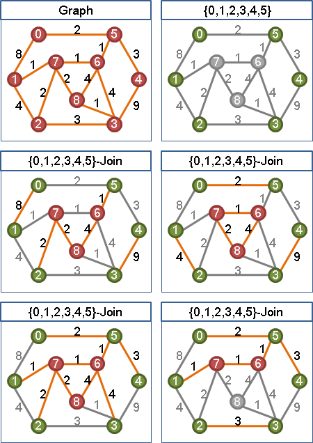
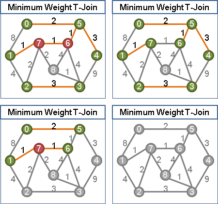
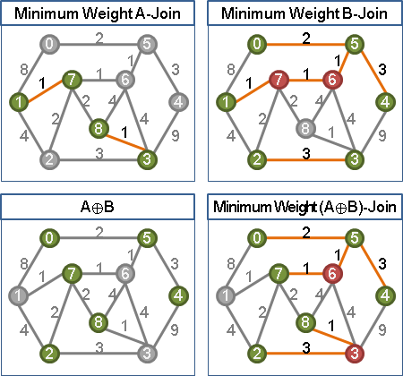
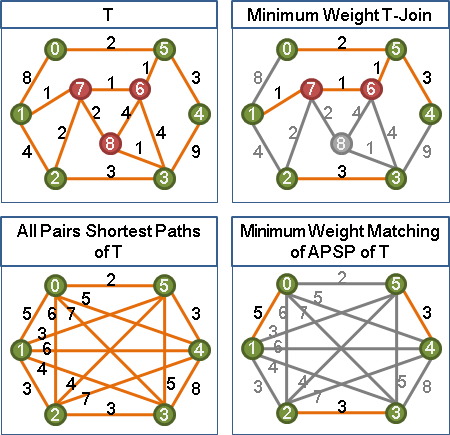
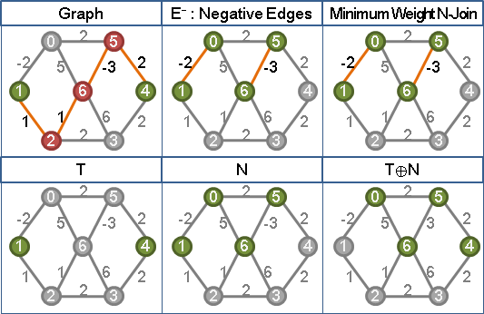
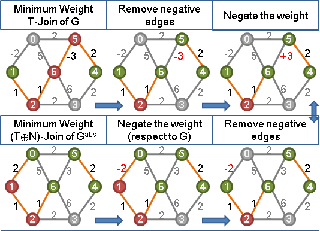
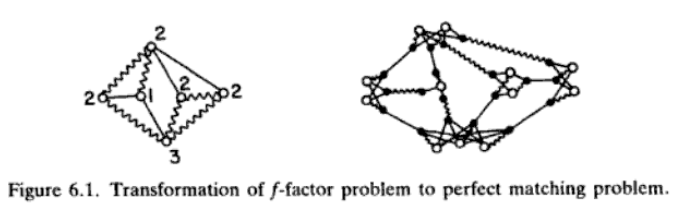

T-Join
T-Join
在一張圖上選出偶數個點（通常標作T集合，也就是T-Join的T；因為是代表集合，所以T要大寫），然後再選出許多條邊，讓選中的點都是連著奇數條選中的邊，讓沒選中的點都是連著偶數條選中的邊，這些邊就叫做一個T-Join。
這個定義是參考Euler Trail設計出來的。各位如果熟悉Euler Trail的起點和終點是「奇點」，中繼點是「偶點」，那麼就能了解這個定義的前因後果了！在圖上選出的偶數個點，正是Euler Trail的起點和終點。額外添上幾個環，便是T-Join了。
Minimum Weight T-Join
一張無向圖上，邊的權重總和最小的T-Join，可能有許多種。
Minimum Weight T-Join可以看作是Matching的「匹配邊」改成了「匹配路徑」。Minimum Weight T-Join是「最短路徑」與「匹配」兩者的結合，同時具有兩者的特性。
一、最短路徑性質：一個Minimum Weight T-Join的每一條路徑，都是最短路徑。一個Minimum Weight T-Join隨便拿掉幾條邊，仍然是Minimum Weight T'-Join。
這個道理，就是「最短路徑截下一段還是最短路徑」的道理。
二、匹配性質：可以用一道數學式子表達。
Minimum Weight (A⊕B)-Join = Minimum Weight A-Join ⊕ Minimum Weight B-Join。 ⊕是對稱差集，也就是XOR。此數學式即是XOR的分配律。
證明就留給大家。可以使用最短路徑性質證明。
正權重圖的Minimum Weight T-Join演算法
一、替T求出所有兩點之間的最短路徑長度。 二、替T找一個最小權匹配。此即Minimum Weight T-Join。
最小權匹配配合最短路徑，如此求得的匹配路徑們，是不會有邊重疊的。兩條匹配路徑，一旦有邊重疊，只要去掉重疊的邊，仍然形成兩條匹配路徑，而且勢必形成權重更小的T-Join。
根據最短路徑特性，求得的匹配路徑都是最短路徑；根據最小權匹配特性，求得的匹配路徑們的權重總和會最小。由此兩點，求得的是Minimum Weight T-Join。
負權重圖的Minimum Weight T-Join演算法
只適用於沒有負環的情況。有負環成為NP-complete問題。
手法是將負權重圖改為正權重圖，並利用正權重圖的Minimum Weight T-Join來倒推出負權重圖的Minimum Weight T-Join。
一、圖上所有負邊構成N-Join。 二、把圖上所有負邊變號，整張圖變成只有非負邊。 三、求出新圖的Minimum Weight (T⊕N)-Join。 四、與N-Join進行XOR，即得到原圖的Minimum Weight T-Join。 權重相差「所有負邊權重總和的絕對值」。
轉換的過程中，用到兩個概念：甲、在同一張圖上，從Minimum Weight T-Join上面拿掉幾條邊，仍然是一個Minimum Weight T-Join。乙、把一張圖上的邊，而且是一個Minimum Weight T-Join上的邊，權重由正變負之後，這個Minimum Weight T-Join的位置仍然不變。
證明過程可以寫成簡單的數學式子：
w(T) = w(T-N) + w(T∩N)
= w(T-N) - w(N-T) + w(N-T) + w(T∩N)
^^^^^^^^^^^^^^^ ^^^^^^^^^^^^^^^
= |w|(T⊕N) + w(N)
^^^^^^^^^ ^^^^
w(T)：原圖的Minimum Weight T-Join的權重。
|w|(T)：原圖所有權重取絕對值變成新圖，新圖的Minimum Weight T-Join的權重。
N：原圖所有負邊會構成Minimum Weight N-Join。
應用
無向圖的兩點間最短路徑：以起點與終點作為T。 無向圖的中國郵差問題：以所有奇點作為T。
b-Matching
b-Matching
b-factor = perfect b-matching 每個點剛好連著b條邊的子圖 perfect (b,u)-matching = u-capacitated perfect b-matching 每個點剛好連著b條邊，每條邊可重複使用，最多使用u次。 (b,u)-matching = u-capacitated b-matching 每個點最多連著b條邊，每條邊可重複使用，最多使用u次。 b-matching 每個點最多連著b條邊 1-matching = matching 一般圖匹配 這些問題可以從第一個reduce到最後一個， 就算是weighted的版本也是P問題，不過演算法很難很難的。 再來，就算每個節點各自設定不同的b值，也是P問題。
演算法
因為P的演算法太難了，所以這裡提供假P的演算法。 針對每一個節點，自己拷貝變成b份，此節點的鄰點也都拷貝一份。 若原本有節點i與鄰點j有邊，則拷貝的i與拷貝的j之間也有邊，形成Kb(i),degree(i)。 然後拷貝出的鄰點，有相對應的就連一條邊。 然後求最大匹配即可。
Stable Matching
但願人長久，千里共嬋娟。《蘇軾．水調歌頭》
穩定婚姻問題（Stable Marriage Problem）
一家婚友社將N位男士與N位女士進行媒合，一位男士配一位女士，共要撮合N對婚姻。
每位男士各自擁有一個好感度列表，對N位女性各以1到N的數字進行排名。每位女士各自亦有一個好感度列表，對N位男性各以1到N的數字進行排名。
媒合時必須避免，不是伴侶的某男某女，出現婚外情的傾向：「男對女說：我愛你比愛我妻子還深。同時女對男說：我愛你比愛我丈夫還深。」請找出適合的配對方式。
演算法（Gale-Shapley Algorithm）
這個問題已被證明恰有兩解（或一解，當此兩解相同時），其中一解稱為男士最佳解，另一解則稱為女士最佳解。男士最佳解的演算法如下：
1. N位男士各自向自己最喜愛的女士求婚。 2. N位女士各自從自己的求婚者中，挑最喜愛的那位男士訂婚，但是往後可背約。 沒有求婚者的女士，就只好等等。 3. 失敗的男士們，只好各自向自己次喜愛的女士求婚。 4. N位女士各自從自己的求婚者中，挑最喜歡的那位男士訂婚，但是往後可背約。 已訂婚卻有更喜愛的男士求婚的女士，就毀約，改為與此男士訂婚。 沒有求婚者的女士，就只好再等等。 5. 重複3. 4.直到形成N對伴侶為止。
男士不斷降格以求，女士不斷水漲船高，最後達成平衡。
女士最佳解的演算法則改為由女士主動求婚即可。
時間複雜度是O(N^2)。
UVa 11119 1175 ICPC 3837
Popular Matching
Popular matching, SIAM J. Computing, Vol. 37, No. 4, pp. 1030-1045.
ICPC 6304